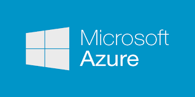

Le Cloud
Introduction
Le cloud computing1, ou l‘informatique en nuage ou nuagique ou encore l‘infonuagique (au Québec), est l‘exploitation de la puissance de calcul ou de stockage de serveurs informatiques distants par l‘intermédiaire d‘un réseau, généralement Internet. Ces serveurs sont loués à la demande, le plus souvent par tranche d‘utilisation selon des critères techniques (puissance, bande passante, etc.) mais également au forfait. Le cloud computing se caractérise par sa grande souplesse : selon le niveau de compétence de l‘utilisateur client, il est possible de gérer soi-même son serveur ou de se contenter d‘utiliser des applicatifs distants en mode SaaS2,3,4. Selon la définition du National Institute of Standards and Technology (NIST), le cloud computing est l‘accès via un réseau de télécommunications, à la demande et en libre-service, à des ressources informatiques partagées configurables5. Il s‘agit donc d‘une délocalisation de l‘infrastructure informatique. Les grandes entreprises du secteur informatique comme IBM, Microsoft, Google, Dell, Amazon et Oracle, Apple, Hewlett-Packard, Thales Services ou Orange Business Services font la promotion du cloud computing6, qui constitue un important changement de paradigme des systèmes informatiques, jusque là constitués de serveurs situés au sein même de l‘entreprise.
I) Principes - Le nuage

Le nuage (anglais cloud) est un ensemble de matériel, de raccordements réseau et de logiciels qui
fournit des services sophistiqués que les individus et les collectivités peuvent exploiter à volonté
depuis n‘importe où dans le monde2. Le cloud computing est un basculement de tendance : au lieu d‘obtenir
de la puissance de calcul par acquisition de matériel et de logiciel, le consommateur se sert de
puissance mise à sa disposition par un fournisseur via Internet.
Les caractéristiques essentielles d‘un nuage sont la disponibilité mondiale en libre-service, l‚élasticité, l‘ouverture, la mutualisation et le paiement à l‘usage :
•ressources en libre-service : et adaptation automatique à la demande. La capacité de stockage et la
puissance de calcul sont adaptées automatiquement au besoin d‘un consommateur. Ce qui contraste avec la
technique classique des hébergeurs où le consommateur doit faire une demande écrite à son fournisseur en
vue d‘obtenir une augmentation de la capacité - demande dont la prise en compte nécessite évidemment un
certain temps. En cloud computing la demande est automatique et la réponse est immédiate11 ;
•ouverture : les services de cloud computing sont mis à disposition sur l‘Internet, et utilisent des
techniques standardisées qui permettent de s‘en servir aussi bien avec un ordinateur qu‘un téléphone ou
une tablette11 ;
•mutualisation : elle permet de combiner des ressources hétérogènes (matériel, logiciel, trafic
réseau) en vue de servir plusieurs consommateurs à qui les ressources sont automatiquement attribuées6.
La mutualisation améliore l‚évolutivité et l‚élasticité et permet d‘adapter automatiquement les ressources
aux variations de la demande6 ;
•paiement à l‘usage : la quantité de service consommée dans le cloud est mesurée, à des fins de
contrôle, d‘adaptation des moyens techniques et de facturation6.
Les nuages utilisent des technologies telles que la virtualisation du matériel informatique, les grilles,
l‘architecture orientée services et les services web2. Un nuage peut être public, privé ou communautaire.
Un nuage public est mis à disposition du grand public. Les services sont typiquement mis à disposition par
une entreprise, qui manipule une infrastructure qui lui appartient11. Un nuage privé est destiné exclusivement
à une organisation, qui peut le manipuler elle-même, ou faire appel à services fournis par des tiers11.
Dans un nuage communautaire l‘infrastructure provient d‘un ensemble de membres qui partagent un intérêt
commun. Ce type de nuage est semblable à ceux montés par les milieux académiques pour des études de grande
envergure.
II) Services
•SAAS = Software As A ServiceEn français logiciel en tant que service. Dans ce type de service, des applications sont mises à la disposition des consommateurs. Les applications peuvent être manipulées à l‘aide d‘un navigateur web ou installées de façon locative sur un PC, et le consommateur n‘a pas à se soucier d‘effectuer des mises à jour, d‘ajouter des patches de sécurité et d‘assurer la disponibilité du service. Gmail est un exemple de tel service. Il offre au consommateur un service de courrier électronique et le consommateur n‘a pas à se soucier de la manière dont le service est fourni11. Autre exemple, Office 365 propose un ensemble de services en abonnement dont la suite logicielle Office qui se met automatiquement à jour, l‘utilisateur ne se soucie pas de racheter un nouveau logiciel ou de le mettre à jour. On parle ici de location de services hébergés par Microsoft. D‘autres exemples de logiciels mis à disposition en Saas sont Google Apps, Office Online ou LotusLive (IBM).
•PAAS = Platform As A ServiceEn français plate-forme en tant que service. Dans ce type de service, situé juste au-dessus du précédent, le système d‘exploitation et les outils d‘infrastructure sont sous la responsabilité du fournisseur. Le consommateur a le contrôle des applications et peut ajouter ses propres outils. La situation est analogue à celle de l‘hébergement web où le consommateur loue l‘exploitation de serveurs sur lesquels les outils nécessaires sont préalablement placés et contrôlés par le fournisseur. La différence étant que les systèmes sont mutualisés et offrent une grande élasticité - capacité de s‘adapter automatiquement à la demande, alors que dans une offre classique d‘hébergement web l‘adaptation fait suite à une demande formelle du consommateur.
•IAAS = Infrastructure As A ServiceEn français infrastructure en tant que service. C‘est le service de plus bas niveau. Il consiste à offrir un accès à un parc informatique virtualisé. Des machines virtuelles sur lesquelles le consommateur peut installer un système d‘exploitation et des applications. Le consommateur est ainsi dispensé de l‘achat de matériel informatique. Ce service s‘apparente aux services d‘hébergement classiques des centre de traitement de données, et la tendance est en faveur de services de plus haut niveau, qui font davantage abstraction de détails techniques.
III) Quelques acteurs
 |
|||
|---|---|---|---|
|  |